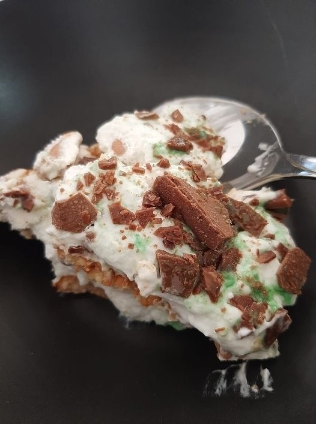

I’m pretty sure there are news editors just waiting to publish a headline to the effect of “Mr Trump, You’re Fired!”. 🤔 The irony will be amazing.
“With the power of Yeet, I was able to teleport to the island …”
Something I wasn’t expecting to hear from my kids today. 😜
I watched this music video with my daughter this evening, and it struck me that not a lot has changed in the ±30 years since this came out.
It was a fresh morning for a walk in Modi’in, Israel. I went for a short walk before work, and enjoyed a cool start to the day. Just a day in the life of many residents of my city. #adayinthelife
My weekend has become all about geeking out with Obsidian, Roam Research and methodologies for creating dynamically linked personal knowledgebases. 😍 📝
TIL today: It’s possible to add emoji to Micro.blog using Unicode for emoji (at least in Custom CSS). I was customising my blog’s Custom CSS, and couldn’t seem to add emoji directly. @manton pointed me in the right direction, and something like this works: content: "U+1F4AC";
I really like the Obsidian text editor. The new Obsidian Publish is really interesting. As the team adds features like custom domain and CSS support, it could become a super lightweight static site publishing option too. 🤔
I’m curious how many people have switched to services like Micro.blog from WordPress as a result of the move towards the block editor as the primary editor in WordPress. 🤔
This is a wonderful way to give insight into our heroes’ fight against the pandemic to save lives: Faces from the frontlines: Photographer at hospital captures COVID-19 ‘angels’. 📷
My wife’s Peppermint Crisp Pudding is amazing. It’s very rich, not at all Diabetic friendly (but, hey, it’s once a year 😬). Definitely a dessert highlight of our year. 🍽

I wonder how much of the frightening COVID-19 infection rate in Israel is exacerbated by the public’s distrust of our political leadership, and lack of faith in their efforts to bring the infection rate down. 🤔
We watched Enola Holmes on Netflix over the weekend, and really enjoyed it. Our daughter even put her phone down for most of the movie to watch!
💡 If you play D&D, or another TTRPG, and you’re looking for inspiration for adventure locations, there are a number of terrific resources. One of my favourites is Earth View from Google that has amazing satellite imagery from our incredible planet.
Revisiting Micro.blog (again)
At the risk of making more silly, grand declarations about the utility of Internet services (which I’m probably prone to do), I’ve started taking another look at Micro.blog. Something about @Manton’s announcement about the v2 update caught my attention. The update is very nice, and my recent posts were really nicely cross-posted to Twitter.
That’s probably a bit of an arbitrary statement, although given how easy it is to publish a quick post to Micro.blog from my phone, I really like the idea of using my MB blog for quick status updates that share nicely to Twitter (FWIW).
I’m not ready to give up my WordPress sites (that’s not really the end goal here). At the same time, it’s easier to send out a quick update with Micro.blog, as much as the WordPress.com mobile app has grown over the years. One set of features in the v2.0 update that I really like are the Bookmarks and highlights features. The highlights feature, in particular, reminds me of how Instapaper handled/handles sharing highlights.
Anyway, just a quick, non-Grand_Declarations, FYI.
Someone may have answered this question before, but here goes: Has anyone worked out how to import a Twitter archive into Micro.blog? This would be a pretty interesting thing to do (after disabling automatic posting to Twitter, of course). 🤔

Ever find yourself publishing something to your blog because you miss blogging, and have just been too busy lately to share much? I’m right there at the moment. 🤔
It’s such a relief when I manage to send a webmention from my blog as a reply to a comment. This stuff is probably so much easier to do than I think it is, and I’m missing something pretty obvious.
I feel like I’m adding way too many items to my Pocket list to read. So many fascinating things to read, not enough time to get through it all.
I’ve discovered just how cool the Web is for recipes now that my wife is away, and I’m cooking for me and our kids for each meal …
Wow, the most recent Dialog update is really good! This app has come a long way in a pretty short time period!
With all the emphasis on iOS apps for Micro.blog, are there good Android apps that enable us to post from our devices? The Web UI is a little fiddly.
I opened my blog this morning, and discovered a 500 Internal Server error. Turns out the IndieWeb plugin (v3.3.12) crashed my site. 😱 It looks like there’s a fix coming but, for now, my site feels pretty disconnected.
Just messing around with MarsEdit integration. It’s such an awesome app that I just don’t appreciate nearly enough.